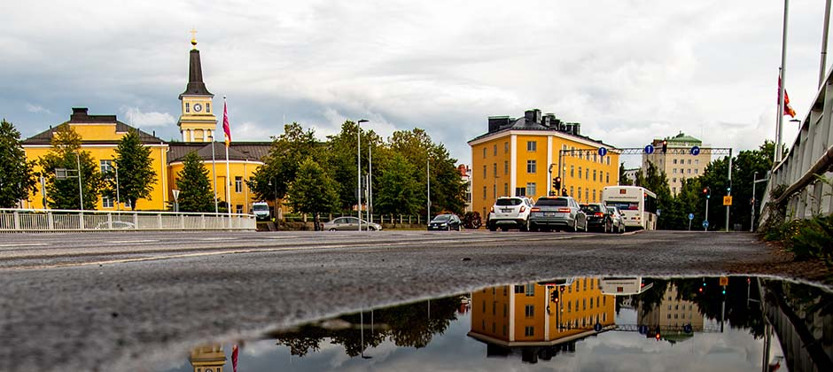

On behalf of our community of 190 000 people, it is my great pleasure to welcome you to the City of Oulu, Finland. Oulu combines Northern hospitality, nature and culture with modern technology. Oulu values education, research and innovation and we are extremely pleased to welcome everyone to contribute to these dynamics. I hope that you will have time to explore the Oulu region, make new friends, exchange ideas and feel at home in Oulu.
The City of Oulu is the capital of northern Finland. The Oulu Region has over 200,000 inhabitants and it is the fastest growing region in Finland. The City of Oulu itself has over 190,000 inhabitants. There are good opportunities for studying, working and research and development, especially in the hi-tech sector. The Oulu Region also has a lively cultural climate. Transport connections are direct and fast, regardless of the means of transport or direction. All main roads meet in Oulu. Oulu has an international airport and there are about 15 flights to and from Helsinki each day. In addition, you can fly direct from Oulu to Riga, Tampere, Rovaniemi and Kemi-Tornio. Oulu railway station is one of the busiest in Finland. Nowadays the Oulu Region is well known for its technology, the hi-tech growth having started after the establishment of Oulu University in 1958.There are two science parks in the region: Technopolis Plc, Scandinavia's first science park, and Medipolis Ltd., as well as a technology centre, Ii Micropolis Ltd. The region is home to many hi-tech companies, such as Nokia, and the sector currently employs over 10,000 people. There are several research institutes, including VTT TechnicalResearch Centre of Finland and the University Hospital. There is also the multidisciplinary Oulu University of Applied Sciences.
See Oulu on map: